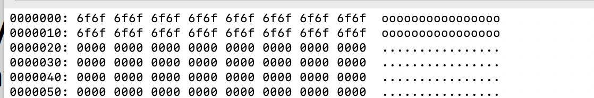
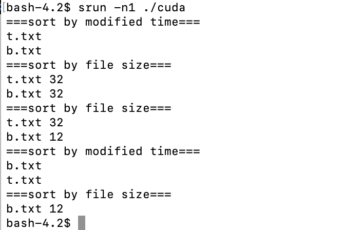
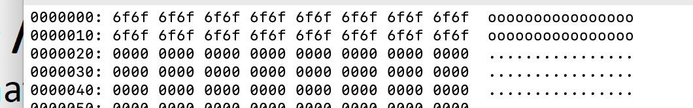
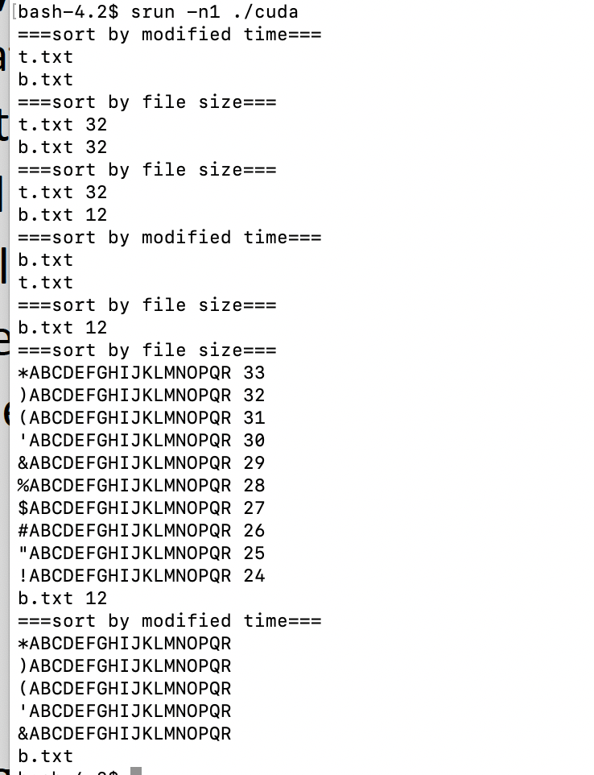

In this project, I have implemented the functions of some APIs with structures: Volume Control Block--contains total # of blocks, # of free blocks... File Control Block--file size, time, filename...The structures are organized on GPU:

Author: Shao Jiaqi
StudentID: 119010256
I use the environment provided by CSC4005.
Operating System: CentOS Linux 7 (Core)
$ g++ --version
g++ (GCC) 4.8.5 20150623 (Red Hat 4.8.5-28)
Copyright © 2015 Free Software Foundation, Inc.
$ cmake --version
cmake **version** 3.21.2
CUDA & GPU Device
Device 0: "NVIDIA GeForce RTX 2080 Ti"
deviceQuery, CUDA Driver = CUDART, CUDA Driver Version = 11.4, CUDA Runtime Version = 11.4, NumDevs = 1
The File system is a method and data structure that the operating system uses to control how data is stored and retrieved. By separating the data into pieces and giving each piece a name, the data is easily isolated and identified. Taking its name from the way paper-based data management system is named, each group of data is called a "file." The structure and logic rules used to manage the groups of data and their names is called a "file system".
The File System is organized into layers: application programs->logical file system->file-organization module->base file system->I/O control->device. The application programs provide users with APIs to use system calls.The file organization module translates logical block to physical block, and manages free space and disk allocation.
In this project, I have implemented the functions of some APIs with structures: Volume Control Block--contains total # of blocks, # of free blocks... File Control Block--file size, time, filename...The structures are organized on GPU:
The file system is simulated with only one directory (no subdirectory), and with multiple subdirectories (the max depth is 3) by a tree structure on GPU.
Super Block
struct SuperBlock
{
int free_block_count; // how many free block
u16 free_block_start; // the first start free block number;
int total_file = 0; // how many files in the storge
};
File Control Block
#pragma pack(1)
struct FCB
{
u32 modified_time; // 4 bytes
u32 create_time; // 4 bytes
u16 file_size; // 2 bytes
u16 start_block;
char filename[20];
};
#pragma pack()
Declaration in the File System:
SuperBlock *superBlock_ptr;
struct FCB *FCB_arr;
uchar *fileContent_ptr;
Directory structure (Bonus)

fs_open(fs, name, G_READ/G_WRITE)

fs_write(fs, input, size, fp)
for (u32 i = start_addr; i < start_addr + size; i++)
{
fs->fileContent_ptr[i] = input[i - start_addr];
} // write to File Content from input buffer.
// update FCB_arr
fs->FCB_arr[fp].file_size = size;
fs->FCB_arr[fp].modified_time = gtime++;
// update superBlock_ptr
int delta_block = block_needs - origin_blocks;
fs->superBlock_ptr->free_block_count -= delta_block;
fs->superBlock_ptr->free_block_start += delta_block;
fs_read(fs, output, size, fp)
start_block and file_sizeoutput buffer.fs_gsys(fs,RM, name)

fs_gsys (LS_D / LS_S)
--------Bonus----------
fs_open(fs, name, G_READ/G_WRITE)
file_size and modified_time;file_size;fs_gsys(fs, MKDIR, name)
fs_openfs_gsys(fs,CD,name)
fp = linear search to get FCD index by name;
fs->curr_dir = fp; // update the current directory;
fs_gsys(fs,CD_P)
// change to the parent directory of the current directory;
fs->curr_dir = fs->FCB_arr[fs->curr_dir].parent;
fs_gsys(fs,RM_RF,name)
// recursive_remove_dir(fs, fp);
if (directory fp is empty) remove the empty directory fp;
for (i in range of total files number) {
if file i is a file {
remove file i;
} else if (file i is a directory) {
recursive_remove_dir(fs, i);
}
}
remove empty directory fp;
fs_gsys(fs, PWD)
fs_gsy(fs, LS_D\LS_S)
.
├── bonus
├── code
└── Report_119010256.pdf
# under the code folder or the bonus folder ...
mkdir build && cd build
cmake ..
cp ./data.bin ./
make -j4
./cuda (or ./as4_bonus)
1. TEST1
|  |  |
| <Fig.3.1 TEST1's snapshot> | <Fig.3.2 TEST1's output> |
2. TEST2
|  |  |
| <Fig.3.3 TEST2's snapshot> | <Fig.3.4 TEST2's output> |
3. TEST3
 |
 |
| <Fig.3.5 TEST3's snapshot> | <Fig.3.6 TEST3's output> |
4. BONUS TEST
 |
 |
| <Fig.3.7 BONUS TEST's snapshot> | <Fig.3.8 BONUS TEST3's output> |
Q: How to handle the external fragment?
A: Compaction. When remove a file, compact the BLOCK, and compact FCB.
In this project, I have implemented the file system under only one directory and multiple directories. By implementing the functions, I have a better understanding of how the file system works, and how to design the data structure and logical methods.